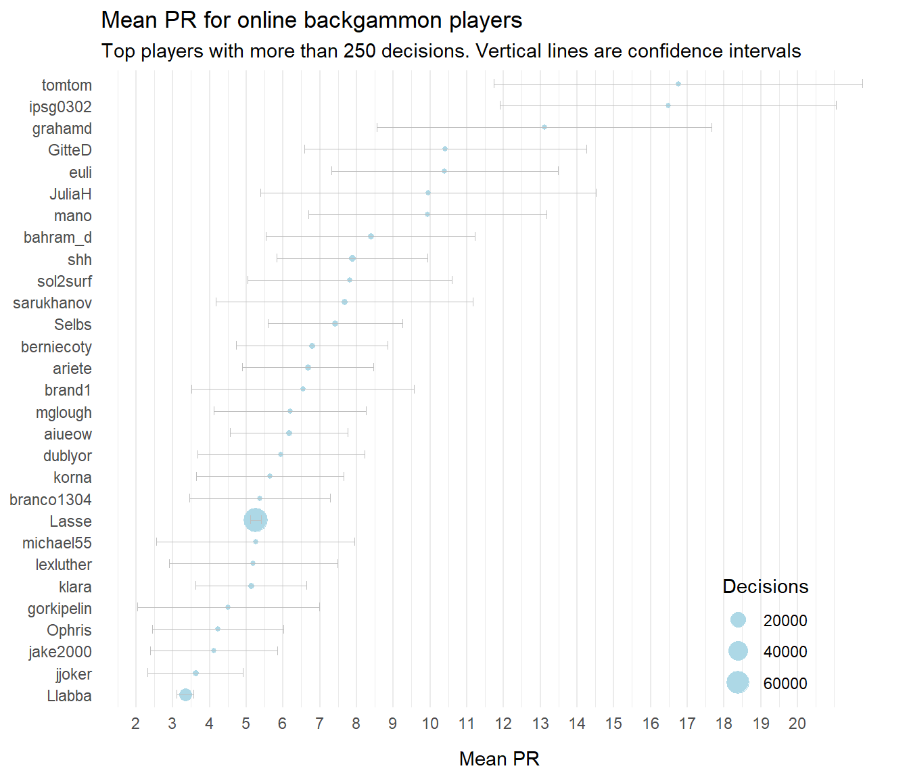

Confidence intervals for PR
Why this?
Performance Rating, PR, is the defacto standard for measuring playing strength in backgammon. It’s the average error per decision (i.e. non-forced and non-trivial play). But for an individual player PR varies a lot from match to match, from tournament to tournament, and over time. This is expected, since players face very different sets of decisions in each match.
A match is, in essence, a random sample of all possible decision one will have to make in backgammon. But random samples vary; some matches are hard, some not so hard. Let’s try to examine that variation and to calculate confidence intervals around PR-values, to get an idea of how accurate a given PR-result is.
Examples
Suppose I estimate my own playing strength at around, say, 5.0 PR. Now, let’s say I play a 17-point match at 6.0 PR. What is the most reasonable interpretation:
- That I for some reason played worse than usual, or
- That the match was tougher that average?
For another example, suppose that I play eight 11-point matches in some tournament, with a combined PR of 4.4. Then, a year later, I play 6.4 in a similar tournament. Is this evidence that my play has gotten worse, or is it as likely to be just statistical noise?
The last example was a real life experience for me at the qualification tournaments for the Danish national team in 2024 and 2025. It would be nice to more confidently interpret these data.
The data
We can use the bgmoves dataset to estimate the variance of my errors, which we need to compute confidence intervals around a specific PR result.
bgmoves have 191012 positions, some involving both a checker play and a cube play. Not all positions in the database are decisions; if we pull out all actual decisions from the dataset, we get a subset of 163530 actual decisions.
In backgammon, the majority of checker play decisions are easy; both me and my opponents get the most checker plays right. Here’s a count of checker play decisions, by player and if a an error was made:
So we got 70-75 percent of all checker play decisions right. One can guess that perhaps half of all checker plays are truly routine; among the other half some are pretty easy, some are too close to care about, and some are real problems. If I get half of the latter group right, that aligns roughly with the numbers above.
Cube decisions are different by nature, they are far fewer, but it looks like most are also relatively easy:
PR estimates
We really wanted to use the data to estimate PR and especially the uncertainty of those estimates, so let’s get going.
PR is the average error per decision, where decision is defined as non-obvious moves: Non-forced checker plays; checker plays where all moves are not equal; non-optional cubes; and potential doubles where doubling is a mistake less that 0.200 emg (the commonly used ‘equivalent-to-money-game’ metric).
When we compute PR for a specific game or match or series of matches, it can be seen as an estimate of the true PR based on a random sample of all possible decision.
Like this:
So in this data set I average a PR of 5.259 ± 0.141. The calculation is based on a lot of decisions, 69,737. The mean error (in equivalent-to-money-game, emg) is -0.011, meaning that I on average sacrifice about a percentage of a point on each decision. That may seem low, but recall that it’s across all decisions, also routine ones, and that most error are zero, so there has to be occasionally really big mistakes in there. (Have a look at this analysis, for a more in-depth look at distributions of mistakes.)
The standard deviation is a measure of how much the errors vary around the mean; we see that the variation is a bit higher for my opponents. That makes sense, since this group includes quite a few inexperienced players, who makes bigger mistakes more frequently.
PR is just the mean error multiplied by -500.
The confidence interval, CI is calculated as the standard deviation divided by the quare root of the number of observations, n:
\[ \text{CI} = \bar{x} \pm z_{\alpha/2} \cdot \frac{\sigma}{\sqrt{n}} \] Where:
\[ \bar{x} \text{ = sample mean} \] \[ z_{\alpha/2} \text{ = critical value (1.96 for 95\% confidence)} \] \[ \sigma \text{ = standard deviation} \] \[ n \text{ = number of observations} \]
We can split up the calculations by decision type (checker or cube), and see that the variance is a bit higher for cube decision. The confidence intervals are quite a bit wider, since the number of decisions is smaller:
Applications
A 17-point match
If, like in the examples mentioned in the beginning, you have a much smaller sample, like a single match, how will the calculations typically look like? Here’s how many decisions we find, on average, per player, in matches of different length:
Let’s say you play a 17-point match, with about 230 decisions on average. If your error variance is like my online error variance, then the confidence interval is about \(\pm2.5\ PR\). That’s a lot, meaning that a single 17-point match is usually not that informative.
If your error variance is more like my online opponents’ error variance, then the confidence interval is even wider, about \(\pm3.5\ PR\).
If, on your other hand, your are an exceptionally skilled player, like a friend of mine who plays under the nick ‘Llabba’, the variance is lower and the confidence interval tighter, about \(\pm1.6\ PR\).
As in so many other cases, we can conclude that we generally need more data that we think.
A disastrous tournament
Let’s take a look at the second example from the beginning: Me playing 4.4 and 6.4 respectively, across eight 11-point matches in two PR-based tournaments.
How strong evidence is this, that I was weaker in the second tournament, rather that just getting particular hard problems, or being unlucky in the inevitable guesswork?
Key numbers:
- First tournament: 1,244 decisions; PR 4.4
- Second tournament: 1,228 decisions; PR 6.4
- For both tournaments, we assume same standard deviation as in my online matches: 0.038
We can focus on the difference in PR between the two estimates by using the following variant of the formula above:
\[ \text{CI} = \bar{x}_1 - \bar{x}_1 \pm z_{\alpha/2} \cdot \sqrt{ \frac{\sigma_1^2}{n_1}+\frac{\sigma_2^2}{n_2} } \] Plugging in numbers, remembering to multiply standard deviation, \(\sigma\), by 500 to get to PR.
\[ \text{CI} = 6.4 - 4.4 \pm 1.96 \cdot \sqrt{\frac{(500 \cdot0.038)^2}{1228}+\frac{(500 \cdot0.038)^2}{1244}}) = 2 \pm 1.5 \] Since the confidence interval of the difference in PR of 2 does not include zero, it looks like there’s some evidence that I played worse in the second tournament, and not just getting harder decisions.
Another way of looking at it is to express the difference in standard errors, or z-scores, which would be:
\[ z = \frac{2}{\frac{500 \cdot0.038}{\sqrt{1228}}+\frac{500 \cdot0.038}{\sqrt{1244}}} = 2.61 \] Which again translates to a p-value of 0.009.
If my backgammon skills really was the same in the two tournaments, I would observe a difference in PR of at least 2 with probability 0.009.
Of course, the real explanation could be a combination: I might have had an harder job in the second tournament, and also was not playing my top game, perhaps due to distraction, fatigue, lack of motivation or whatever.
A wing fighter plot
Now that we have the data, let’s try to rank player by average PR in a nice plot.

In general, for random opponents on Galaxy Backgammon, there are too little data for the confidence intervals to be super meaningful. For myself and Llabba I have a lot more data so estimates are much more precise.
Note, as mentioned earlier, that the confidence intervals depend not only on the number of decisions we have available, but also on the standard deviation of the errors, e.g. how consistent players are.
Not surprisingly, strong players tend to have lower standard deviation as well; almost by definition they have fewer extreme values. We can see that in the plot below.
A word of caution
Let’s take a quick moment to reiterate the concept of a confidence interval, since this is often misinterpreted. I’m using a customary confidence level of 95%. That means, that before playing a match, I know that my resulting PR will, with probability 95%, be within, say, \(\pm2.5\) of my true PR.
It does not mean that my true PR is within this interval from any result that I have already obtained. Once the match is finished, it either does or does not reflect my actual PR. The 95% refers to the process of collecting data from random sample, not the accuracy of any specific result.
Double checking
Calculate another way
Just to check, let’s re-calculate my confidence intervals from the table in Section 4 using a the t.test() function from the stats package in R – as standard as it gets.
Code
my_errors <- df |>
filter(Player == "Lasse") |>
pull(error_size) |>
(`*`)(-500)
test_result <- my_errors |> t.test()
my_mean <- test_result$estimate |> round(3)
my_ci <- (test_result$estimate - test_result$conf.int[1]) |> round(3)
cat("Mean PR for player Lasse : ", my_mean, "\r",
"Confidence interval for player Lasse: ", my_ci,
sep = "")Mean PR for player Lasse : 5.259
Confidence interval for player Lasse: 0.141This agrees quite closely; the small discrepancy is likely due to using the t-distribution which in this case is nearly identical to the normal distribution.
Normally distributed?
It would be nice to check if the data actually behaves as assumed above: That PR estimates follows a normal distribution around the true mean, with the standard deviation of the estimates declining by the square root of the number of observations. (This should hold even though the distribution of errors is far from normal, as stated by the Central limit theorem).
To check, we can treat each individual game in the dataset as a sample, and see if game-level average errors are indeed distributed normally around players’ overall error rate. We expect games with fewer decisions to show larger variability than games with many decisions, but they should be approximately normal distributed around the ‘true’ mean.
Actually, the distribution does not quite follow the symmetrical shape of the normal distribution. In hindsight this is not so surprising: The PR value cannot go below zero but the upper bound is very high. In other words: There’s a hard limit to how well you can play in a given game (zero PR), but the potential to screw up is huge. You can be a large number of standard deviations above your average, but only so much lower.
Bootstrap
To check if this affect the confidence intervals calculated above, let’s try boot strapping – a numerical approach that doesn’t rely on assumptions of the underlying distribution or the Central limit theorem).
Again, we compare to my own confidence interval from Section 4:
Boot strapped mean PR for player Lasse: 5.26
Boot strapped CI for player Lasse : 0.139Again very close; small differences can be due to the stochastical nature of boot strapping.
We can conclude that the confidence intervals presented earlier are likely to be valid.